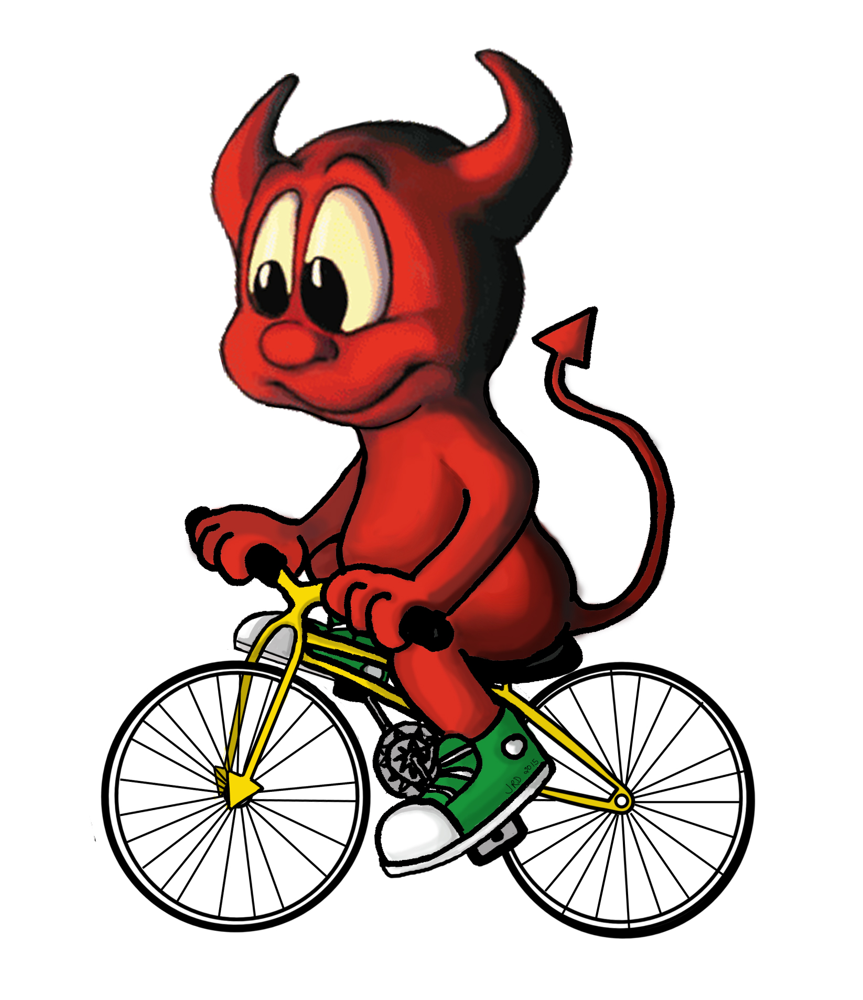

FreeBSD
Berkeley Software Distribution The Power To Serve

FreeBSD is an operating system for a variety of platforms which focuses on features, speed, and stability.
FreeBSD is an operating system used to power modern servers, desktops, and embedded platforms. Its advanced networking, security, and storage features have made FreeBSD the platform of choice for many of the busiest web sites and most pervasive embedded networking and storage devices.
Latest News
-
2024-11-23
FreeBSD 14.2-RC1 Available -
2024-11-17
FreeBSD 14.2-BETA3 Available -
2024-11-07
July-September 2024 Status Report
Upcoming Events
-
2025-02-01 - 2025-02-02
FOSDEM 2025 Brussels, Belgium -
2025-03-20 - 2025-03-23
AsiaBSDCon 2025 Tokyo, Japan -
2025-06-11 - 2025-06-14
BSDCan 2025 Ottawa, Canada
Press
-
2024-08
Sovereign Tech Fund to Invest €686,400 in FreeBSD Infrastructure Modernization -
2023-06
Happy 30th, FreeBSD!
Security
-
2024-10-29
FreeBSD-SA-24:19.fetch -
2024-10-29
FreeBSD-SA-24:17.bhyve -
2024-09-19
FreeBSD-SA-24:16.libnv